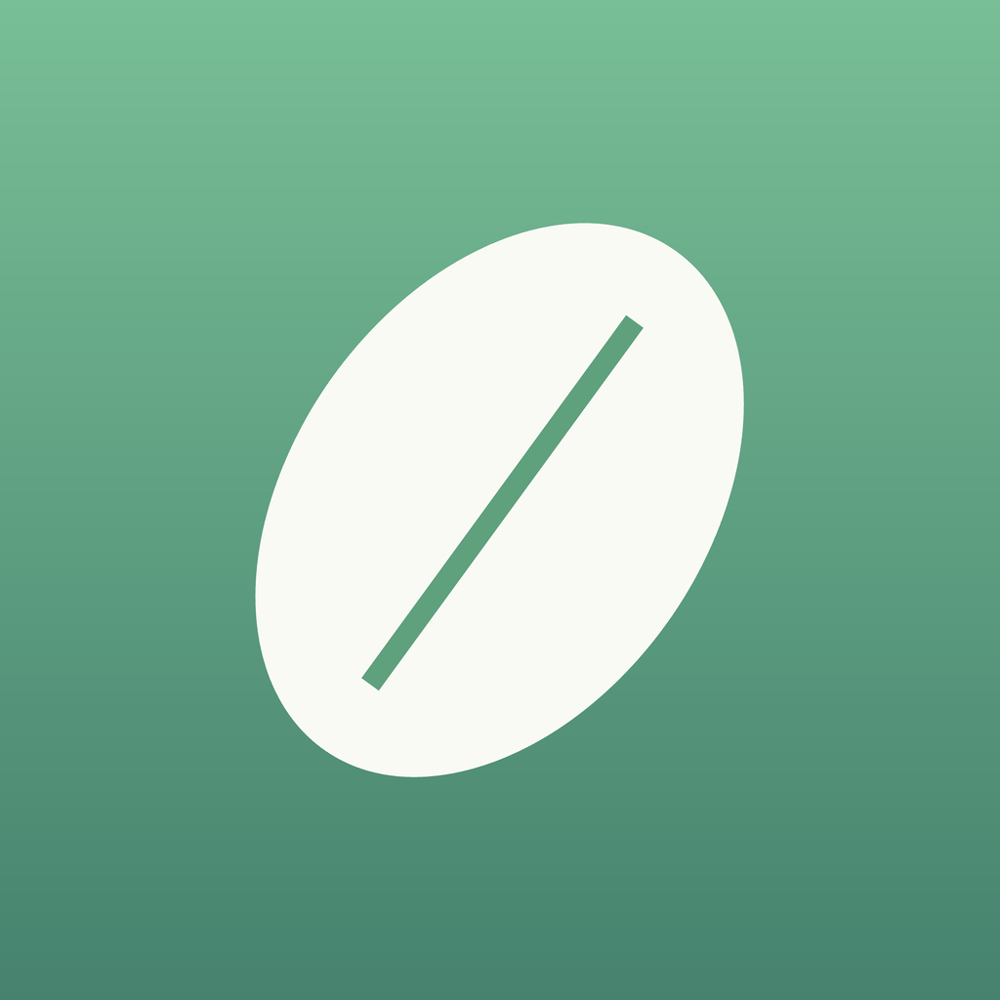

Iemand die je volgtSomeone you follow

Geen voorgestelde posts.
Geen eindeloos scrollen.
Geen AI-posts.
No suggested posts.
No endless scroll.
No AI posts.
Zoveel tijd zitten mensen gemiddeld op social mediaThe average time people spend on social media
Plug & play
Feed stopt als je bij bent.Feed stops when you're caught up.
Alleen mensen die je volgt. AI-posts en AI-profielen eruit.Only people you follow. AI-made posts and profiles out.
Nep-winacties en phishinglinks eruit.Fake giveaways and phishing links out.
★★★★★
“Controle weer terug in mijn eigen handen”“Control back in my own hands”
Mijn redenen om hiermee te beginnenMy reasons to start this
Jongeren van 15 tot 19 jaar zitten gemiddeld 2 uur en 40 minuten per dag op social media (160 minuten). Over alle Nederlanders van 15 jaar en ouder is het gemiddelde ongeveer 2 uur. De 2,5 uur hier is het cijfer voor jongeren, naar beneden afgerond. Zelf opgegeven in een online vragenlijst onder 6.685 Nederlanders, 2026.
Newcom, Nationale Social Media Onderzoek 2026 ↗Samenvatting op Frankwatching ↗Het is meer dan 50%. Mark Zuckerberg (Meta) zei op 24 april 2024: “voor het eerst ooit wordt meer dan 50% van de content die mensen op Instagram zien door AI aanbevolen.” Dit geldt wereldwijd voor Instagram, niet voor alle social media. Voor de Facebook-feed noemde hij ongeveer 30%.
Meta, Q1 2024 earnings call (transcript, PDF) ↗De Britse toezichthouder PSR keek naar betaalfraude in 2023 (APP-fraude: je maakt zelf geld over naar een oplichter). Bij 54% van de zaken (119.338) was een app van Meta betrokken: Facebook, Instagram of WhatsApp. Rapport van december 2024.
Payment Systems Regulator (Engels) ↗Dutch young people aged 15 to 19 spend on average 2 hours 40 minutes a day on social media (160 minutes). Across all Dutch people aged 15 and over, the average is about 2 hours. The 2.5 hours here is the figure for young people, rounded down. Self-reported in an online survey of 6,685 Dutch people, 2026.
Newcom, Dutch National Social Media Research 2026 ↗Summary on Frankwatching (Dutch) ↗It is more than 50%. Mark Zuckerberg (Meta) said on 24 April 2024: “for the first time ever, more than 50% of the content people see on Instagram is now AI recommended.” This is a worldwide figure for Instagram, not for all social media. For the Facebook feed he said about 30%.
Meta, Q1 2024 earnings call (transcript, PDF) ↗The UK Payment Systems Regulator looked at payment scams in 2023 (APP fraud: you send money to a scammer yourself). In 54% of cases (119,338), a Meta app was involved: Facebook, Instagram or WhatsApp. Report from December 2024.
Payment Systems Regulator ↗Waarom ik Lowtide bouwWhy I build Lowtide
Ik had het idee al heel lang. Het probleem is zo extreem groot, ook bij mezelf. Je ziet zowel de jeugd als volwassenen langzaam verdwalen in ruis en eindeloos scrollen.I had the idea for a very long time. The problem is extremely big, for me too. You see young people and adults slowly getting lost in noise and endless scrolling.
We moeten niet vergeten dat er ook goede aspecten zijn aan social media. Daarom haalt Lowtide de ruis en het eindeloze scrollen weg. Je krijgt de controle terug, en daarmee je vrije tijd.We shouldn't forget that social media has good sides too. That's why Lowtide takes away the noise and the endless scroll. You get back control, and with it your free time.
Max Zijlstra · maker van Lowtidemaker of Lowtide